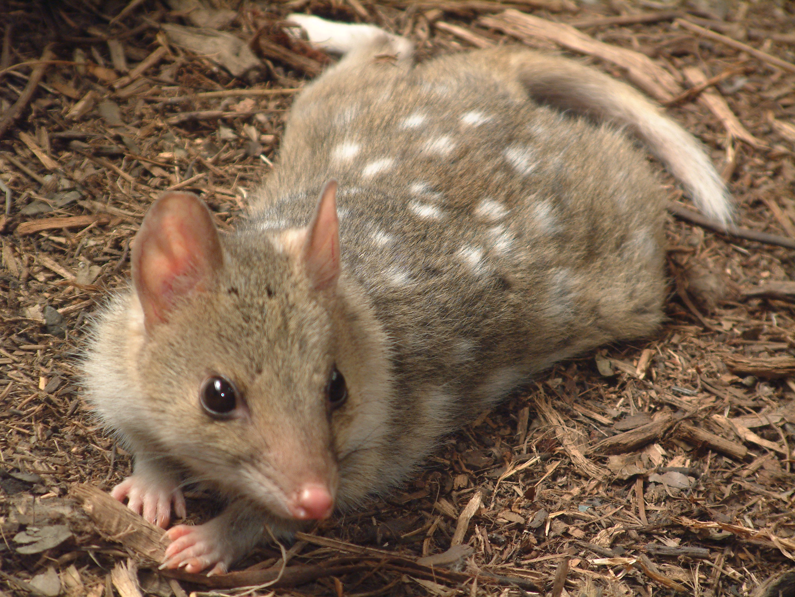

Daintree Rainforest
We've all heard of the Amazon Rainforest and Congo Rainforest but have you heard of the Daintree
Rainforest?
Some of the oldest fauna in the Daintree Rainforest have been growing for more than 180 million years.
It is the world’s oldest tropical rainforest by an impressive 10 million years! It contains the highest
number of animals and plant species that are very rare. Unfortunately, it is also home to 142 rare,
threatened and endangered species of plants and 44 rare, threatened or endangered species of animals.
A cause for concern
Forest degradation and deforestation in tropical countries is a major environmental, social and economic
problem, and will continue to be so unless action is taken. Time is running out! We need to save the
remaining rainforests for future generations and preserve the beautiful biodiversity.
The Daintree is also home to:
- 30% of Australia’s marsupial species
- 20% of Australia’s reptile species
- 29% of Australia’s frog species
- 58% of Australia’s Bat & Butterfly species
Here are some of the endangered species that can be found in Daintree Rainforest!

By now, we should all know Australia is home to many cute marsupials.. This is another one of them! It is a carnivorous marsupial, also called the tiger cat or tiger quoll!